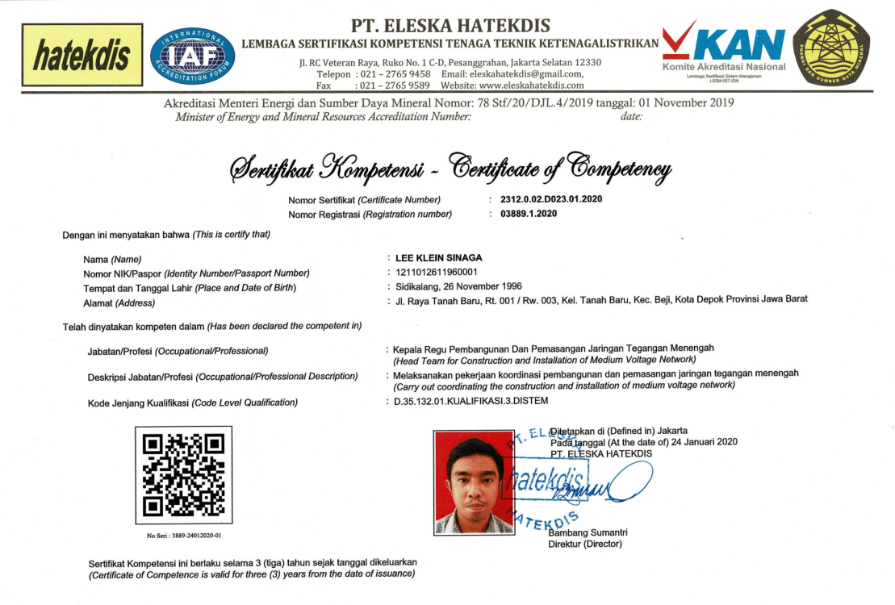
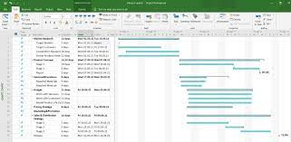
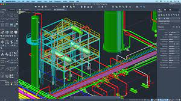

Project Controller di Primordia Siparup Perkasa (Jakarta)

November 2017 - Juli 2022 (over 4 years)
Job Desc:
Siapakah aku?
Aku adalah seorang mahasiswa biasa..
Mau tau tentang aku? Cek webpage ini untuk lebih tau tentang diriku
Ga mau tau? Tolonglah cek, biar diriku bisa lulus. Let's go!

November 2017 - Juli 2022 (over 4 years)
Job Desc:
Januari 2017 - Maret 2017 (3 months)
Job Desc:
Sertifikat kompetensi ini menjadi pengesahan bahwa saya cakap untuk melakukan supervisi pada proyek pembangunan transmisi tegangan menengah
Pengalaman empat tahun melakukan scheduling proyek terutama untuk pembangunan jaringan transmisi listrik.
Pengalaman empat tahun untuk membuat gambar teknik layout transmisi listrik. Termasuk as built drawing setelah pekerjaan
